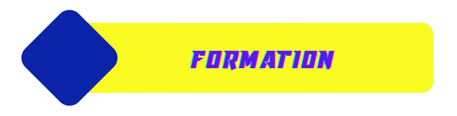
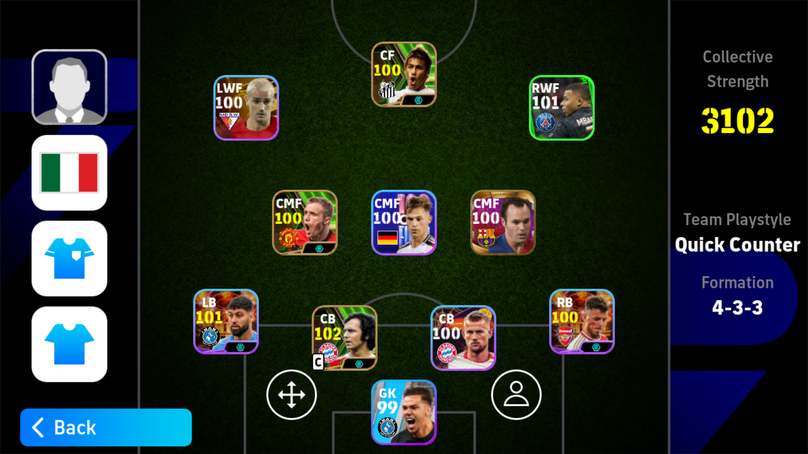แผน Defult คือแผนที่ในแต่ละประเทศใช้นั้นแตกต่างกัน อย่างเช่น Italy ใช้แผน 4-3-3
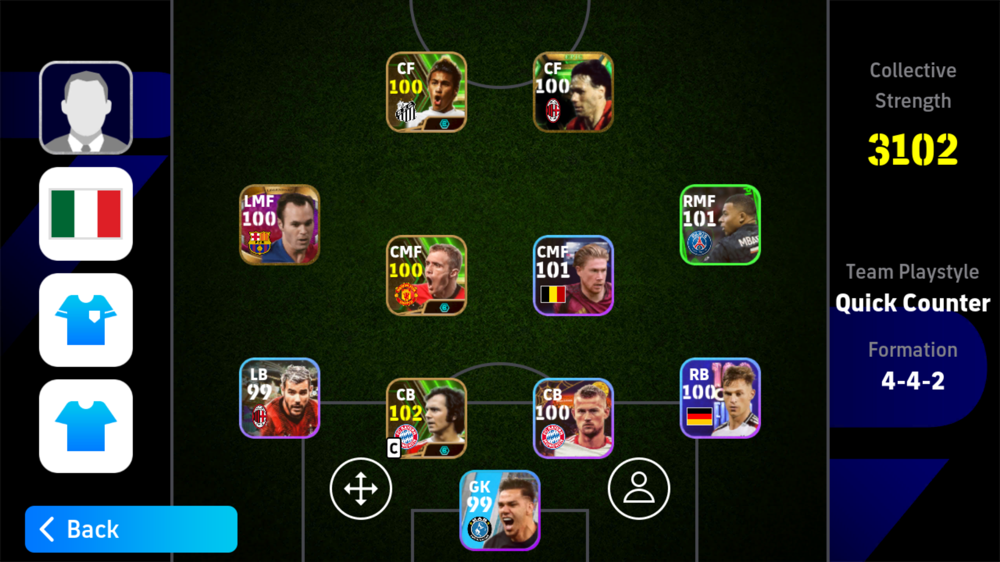แผน 4-4-2 มีข้อดีคือ ความสมดุลระหว่างเกมรุกและเกมรับ มีความมั่นคงในแดนกลาง และการโจมตีที่รวดเร็วผ่านกองหน้าสองคนแต่ข้อเสียคือขาดความหลากหลายในเกมรุก ความยืดหยุ่นในการปรับแผนต่ำและอาจเสียการควบคุมในแดนกลางเมื่อเจอกับทีมที่ใช้แผนที่มีผู้เล่นแดนกลางมากกว่า
แผน 4-3-3 มีข้อดีคือ ความสมดุลระหว่างเกมรุกและเกมรับ การครองบอลในแดนกลางที่ดี การโจมตีจากปีกที่มีประสิทธิภาพ และความยืดหยุ่นในการปรับเปลี่ยนแผน แต่มีข้อเสียคือ ความเสี่ยงจากการโดนโจมตีสวนกลับ การครอบคลุมพื้นที่กองกลางไม่ทั่วถึง ความพึ่งพาผู้เล่นปีก และปัญหาในการป้องกันหากกองกลางตัวรับไม่แข็งแกร่งพอ
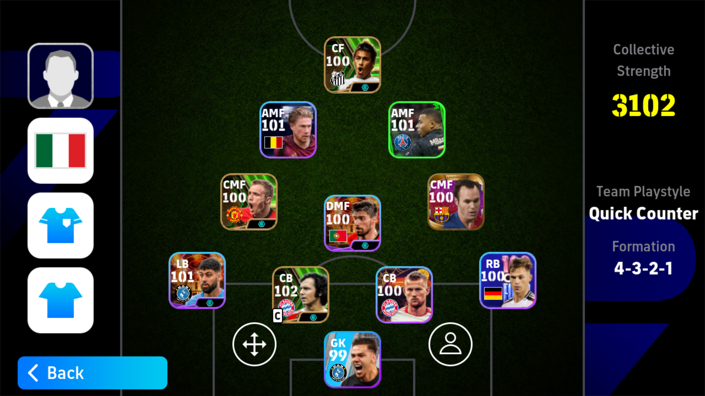แผน 4-3-2-1 มีข้อดีคือ ความแข็งแกร่งในแดนกลาง การป้องกันที่แน่นหนา และการสร้างสรรค์เกมรุกที่ยืดหยุ่นจากผู้เล่นตัวรุกสองคนที่อยู่หลังหน้าเป้า แต่ข้อเสียคือ ขาดการโจมตีจากด้านข้าง ความกดดันในการทำเกมรุกตกอยู่ที่ผู้เล่นไม่กี่คน และอาจเสียเปรียบในเกมรับหากเจอกับทีมที่ใช้แผนกว้างๆ และโจมตีจากปีก
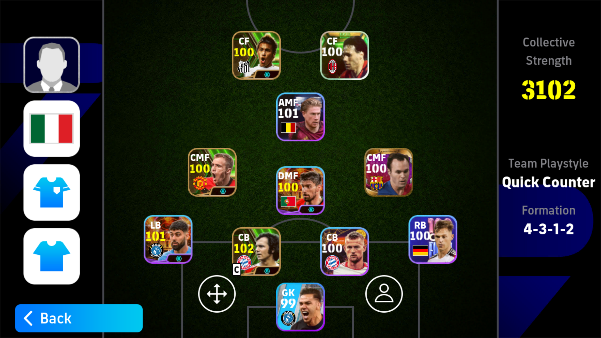แผน 4-3-1-2 มีข้อดีคือ การควบคุมแดนกลางที่แข็งแกร่ง การสร้างสรรค์เกมรุกผ่านตัวรุกกลาง (CAM) ที่มีบทบาทสำคัญ และกองหน้าคู่ที่ทำงานร่วมกันได้ดี แต่ข้อเสียคือ ขาดการโจมตีจากด้านข้าง อาจถูกโจมตีจากปีกได้ง่าย และต้องพึ่งพาผู้เล่นในตำแหน่ง CAM อย่างมากในการสร้างโอกาสทำประตู
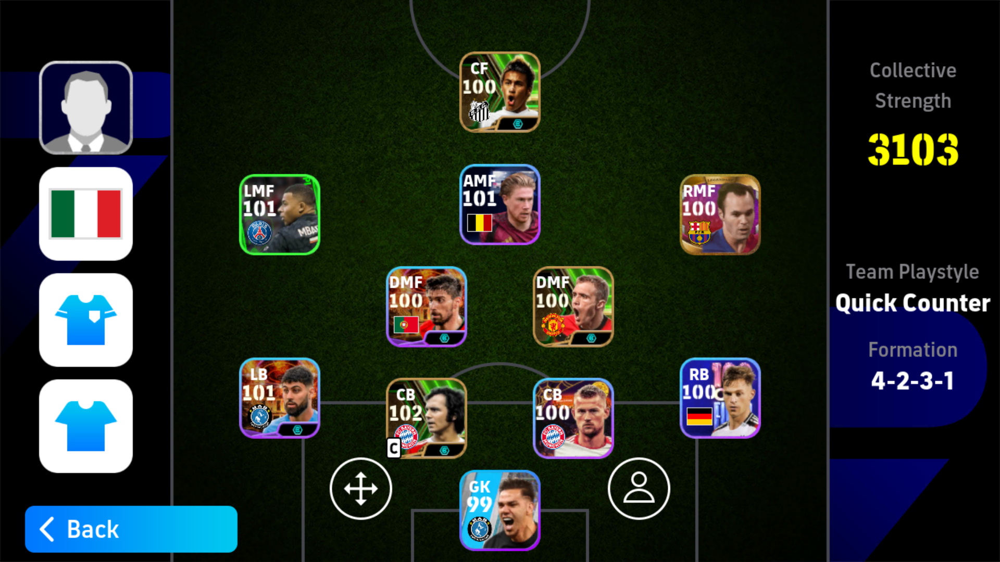แผน 4-2-3-1 มีข้อดีคือ ความสมดุลระหว่างเกมรุกและเกมรับ การป้องกันที่แน่นหนาจากกองกลางตัวรับสองคน ความยืดหยุ่นในการโจมตีด้วยผู้เล่นตัวรุกสามคน และการสร้างสรรค์เกมที่หลากหลาย แต่ข้อเสียคือ อาจขาดความเร็วในการโจมตีสวนกลับ ขึ้นอยู่กับความสามารถของผู้เล่นตัวรุกในการทำประตู และกองหน้าตัวเป้าอาจถูกโดดเดี่ยวถ้าทีมไม่สนับสนุนเพียงพอ
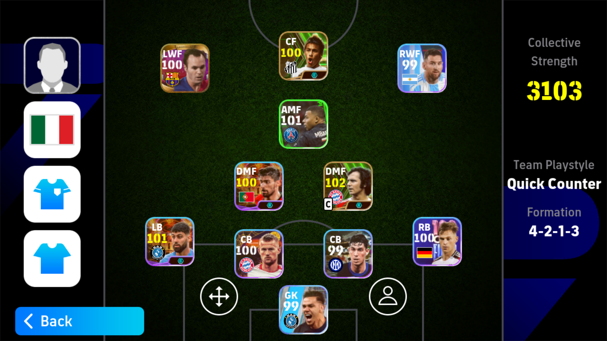แผน 4-2-1-3 มีข้อดีคือ ความแข็งแกร่งในการป้องกันจากกองกลางตัวรับสองคน การโจมตีที่มีประสิทธิภาพผ่านปีกและกองหน้าสามคน และการสร้างสรรค์เกมจากตัวรุกกลาง (CAM) ที่มีบทบาทสำคัญ แต่ข้อเสียคือ อาจขาดการควบคุมแดนกลางในบางสถานการณ์ ความกดดันในการสร้างสรรค์เกมอยู่ที่ผู้เล่น CAM และกองกลางตัวรับต้องทำงานหนักเพื่อครอบคลุม พื้นที่และป้องกันการโจมตีของคู่แข่ง
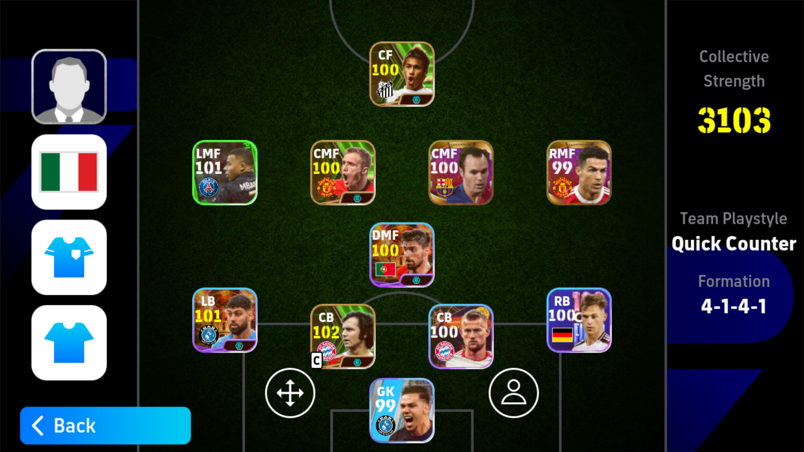แผน 4-1-4-1 มีข้อดีคือ ความแข็งแกร่งในการป้องกันจากกองกลางตัวรับหนึ่งคน ความสมดุลในแดนกลางที่ดี และการสนับสนุนกองหน้าจากผู้เล่นกองกลางสี่คนที่เข้ามาเสริมเกมรุก แต่ข้อเสียคือ กองหน้าตัวเป้าอาจโดดเดี่ยวในการทำประตู ขาดการโจมตีจาก ปีกที่เฉียบคม และอาจถูกกดดันในแดนกลางหากเจอกับแผนที่มีผู้เล่นแดนกลางมากกว่า
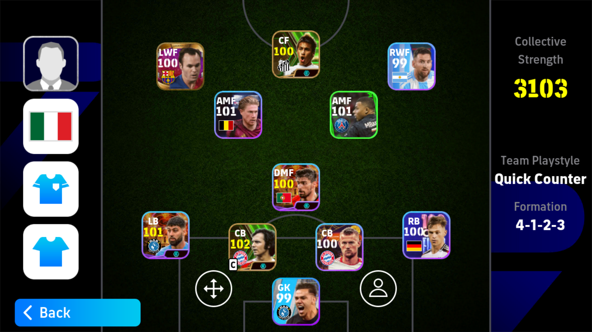แผน 4-1-2-3 มีข้อดีคือ ความแข็งแกร่งในเกมรับจากกองกลางตัวรับหนึ่งคน ความยืดหยุ่นในการสร้างสรรค์เกมรุกผ่านกองกลางสองคนและการโจมตีที่มีประสิทธิภาพจากกองหน้าสามคนที่ใช้ความเร็วและความสามารถในการทำประตูแต่ข้อเสียคือการควบคุมแดนกลางอาจขาดความสมดุลเมื่อเทียบกับแผนที่มีผู้เล่นแดนกลางมากกว่า กองกลางตัวรับต้องทำงานหนักในการป้องกัน และการโจมตีอาจถูกจำกัดหากผู้เล่นปีกไม่สามารถสร้างโอกาสได้ดีพอ
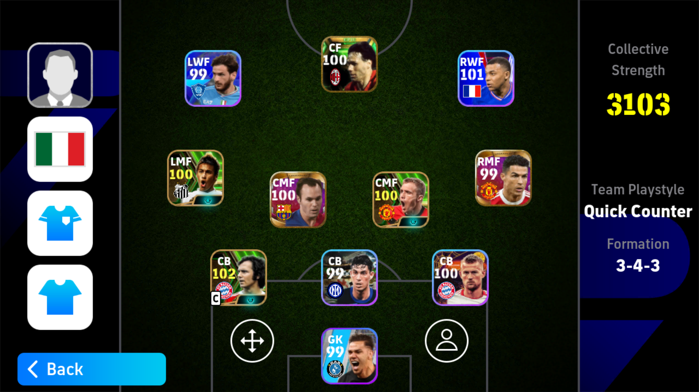แผน 3-4-3 มีข้อดีคือ เกมรุกที่ดุดันด้วยกองหน้าสามคนและปีกที่สนับสนุนเกมรุกได้ดี การโจมตีจากด้านข้างที่มีประสิทธิภาพ และการครองบอลในแดนกลางที่ดีจากกองกลางสี่คน แต่ข้อเสียคือ แนวรับอาจเปราะบางเนื่องจากมีเพียงกองหลังสามคน ความเสี่ยงในการโดนโจมตีสวนกลับสูง และการป้องกันพื้นที่กว้างอาจทำได้ยากหากปีกไม่ช่วยในการป้องกัน
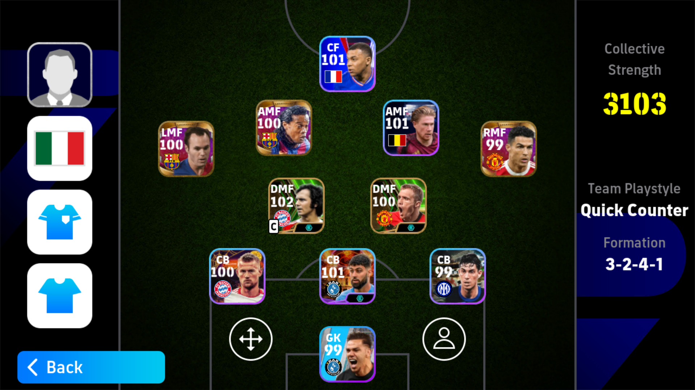แผน 3-2-4-1 มีข้อดีคือ การป้องกันที่แข็งแกร่งด้วยกองหลังสามคนและกองกลางตัวรับสองคน ความยืดหยุ่นในการสร้างสรรค์เกมรุกจากกองกลางสี่คนและการโจมตีที่มีประสิทธิภาพจากกองหน้าตัวเป้าแต่ข้อเสียคือ ขาดการสนับสนุนจากปีกที่ทำให้การโจมตีจากด้านข้างอาจอ่อนแอและการควบคุมแดนกลางอาจมีความเสี่ยงหากฝ่ายตรงข้ามใช้แผนที่มีผู้เล่นแดนกลางมากกว่า
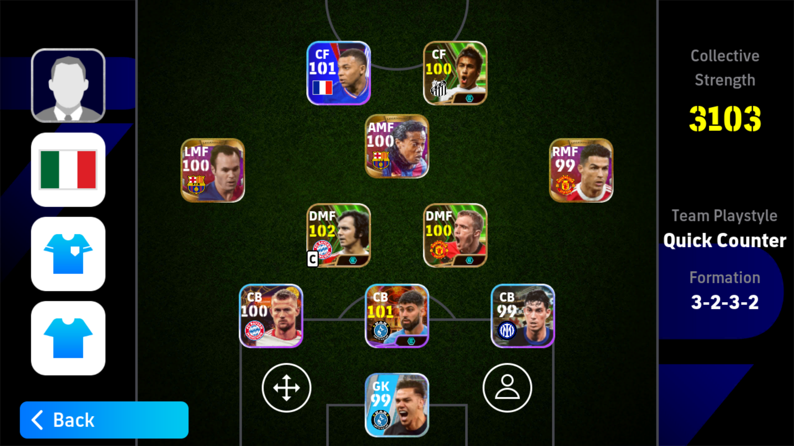แผน 3-2-3-2 มีข้อดีคือ การป้องกันที่แข็งแกร่งจากกองหลังสามคนและกองกลางตัวรับสองคน การควบคุมแดนกลางที่ดีจากกองกลางสามคนและการโจมตีที่มีประสิทธิภาพจากกองหน้าสองคนที่ทำงานร่วมกันได้ดี แต่ข้อเสียคือ ขาดการสนับสนุนจากปีกซึ่งทำให้การโจมตีจากด้านข้างอาจอ่อนแอ และการโจมตีสวนกลับอาจถูกจำกัดหากกองกลางตัวรับและกองหลังไม่สามารถกดดันได้ดี
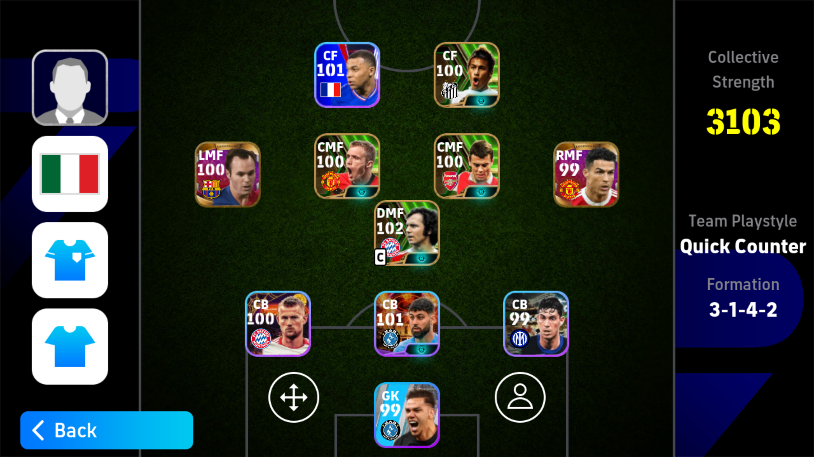แผน 3-1-4-2 มีข้อดีคือ การป้องกันที่แข็งแกร่งจากกองหลังสามคนและกองกลางตัวรับหนึ่งคน การควบคุมแดนกลางที่ดี และการโจมตีที่หลากหลายจากกองหน้าสองคน แต่ข้อเสียคือ ขาดการโจมตีจากปีกที่เฉียบคม และมีความเสี่ยงจากการโจมตีสวนกลับที่รวดเร็ว
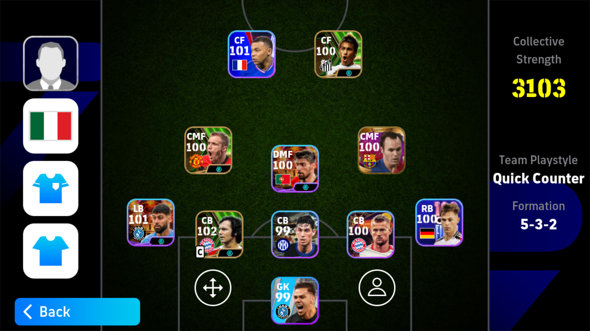แผน 5-3-2 มีข้อดีคือ การป้องกันที่แข็งแกร่งด้วยกองหลังห้าคนและความมั่นคงในเกมรับ การสร้างเกมจากกองกลางสามคน และการโจมตีที่มีความหลากหลายจากกองหน้าสองคน แต่ข้อเสียคือ การโจมตีจากปีกอาจอ่อนแอ การโจมตีอาจขาดความหลากหลาย และการปรับเปลี่ยนแผนไปเป็นเกมรุกอาจทำได้ยาก
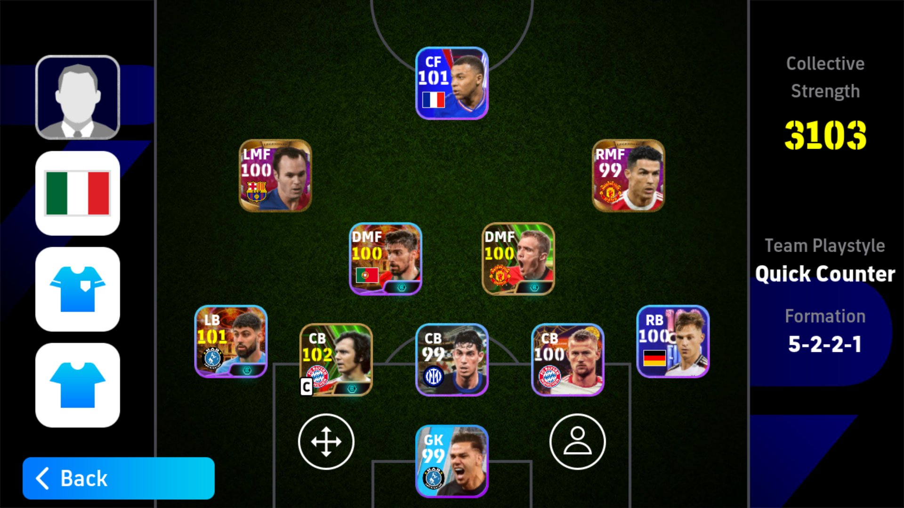แผน 5-2-2-1 มีข้อดีคือ การป้องกันที่แข็งแกร่งและความมั่นคงในเกมกลาง โดยมีการป้องกันที่ดีจากกองหลังห้าคนและกองกลางสองคน แต่ข้อเสียคือ การโจมตีอาจขาดความหลากหลายจากกองหน้าเดียวและการสนับสนุนจากปีกอาจไม่เพียงพอ
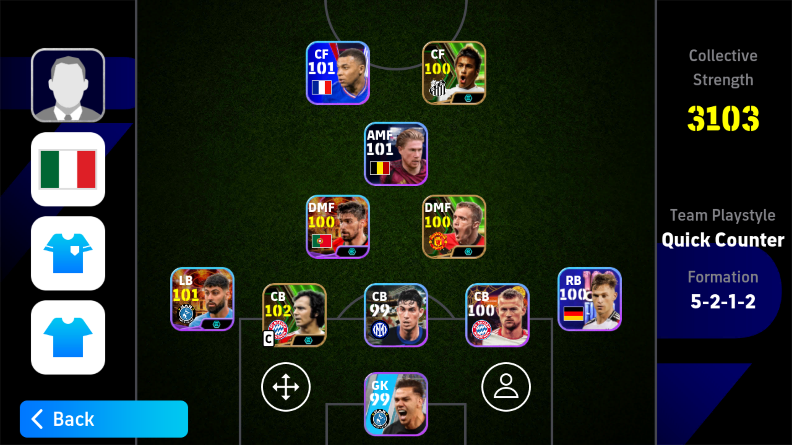แผน 5-2-1-2 มีข้อดีคือ การป้องกันที่แข็งแกร่งและความมั่นคงในเกมกลาง แต่ข้อเสียคือ การโจมตีจากปีกอาจอ่อนแอและการโจมตีอาจขาดความหลากหลาย